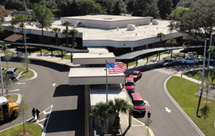
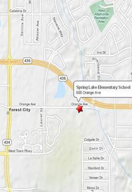

"Commitment to Excellence"
The mission of Spring Lake Elementary School, working in partnership with its families and community, is to strive for excellence by providing a learning environment that will enable all students to achieve their potential.
June 2012
| 1 | 2 | |||||
| 3 | 4 | 5 | 6 | 7 | 8 | 9 |
| 10 | 11 | 12 | 13 | 14 | 15 | 16 |
| 17 | 18 | 19 | 20 | 21 | 22 | 23 |
| 24 | 25 | 26 | 27 | 28 | 29 | 30 |
Quick Facts
{kind=link}
| Office Hours: | School Hours: |
|---|---|
| Monday-Friday | Monday-Friday |
| 7:30AM-3:30PM | 7:40AM-2:20PM |
| 407-746-1650 | 407-746-1699 |
- Current Enrollment: 820
- Early Dismissal: (Wed) 7:40AM - 1:20PM
- Uniforms: Red, white, or blue shirt; Khaki pants, skirt, skorts, or shorts.
- After School Care: Extended Day 2:30PM - 6:00PM
- Average Class Size: Primary grades (K-3) average of 18:1 and intermediate grades (3-5) average of 22:1
- Exceptional Student Education: Speech & Language, Gifted, & Varying Exceptionalities.
- English for Speakers of Other Languages Program: Yes
- Clubs/Activites: Daily student-produced morning news - WSLE Cannel 56 News, 5th Grade Patrols, Student Council, 4th and 5th Grade Chorus, SEOME and Runner's Club

Directions to
Spring Lake Elementary School
Take I-4 to the Altamonte Springs exit (SR-436) and head west for 2 miles. Make a left on Orange Ave and the school is immediately on the left.
Spring Lake Elementary is located on the corner of Orange Ave and State Road 436 near Costco Wholesale in Altamonte Springs, Florida.
To get specific directions to the the school from your location, click here to goto Google Maps©.